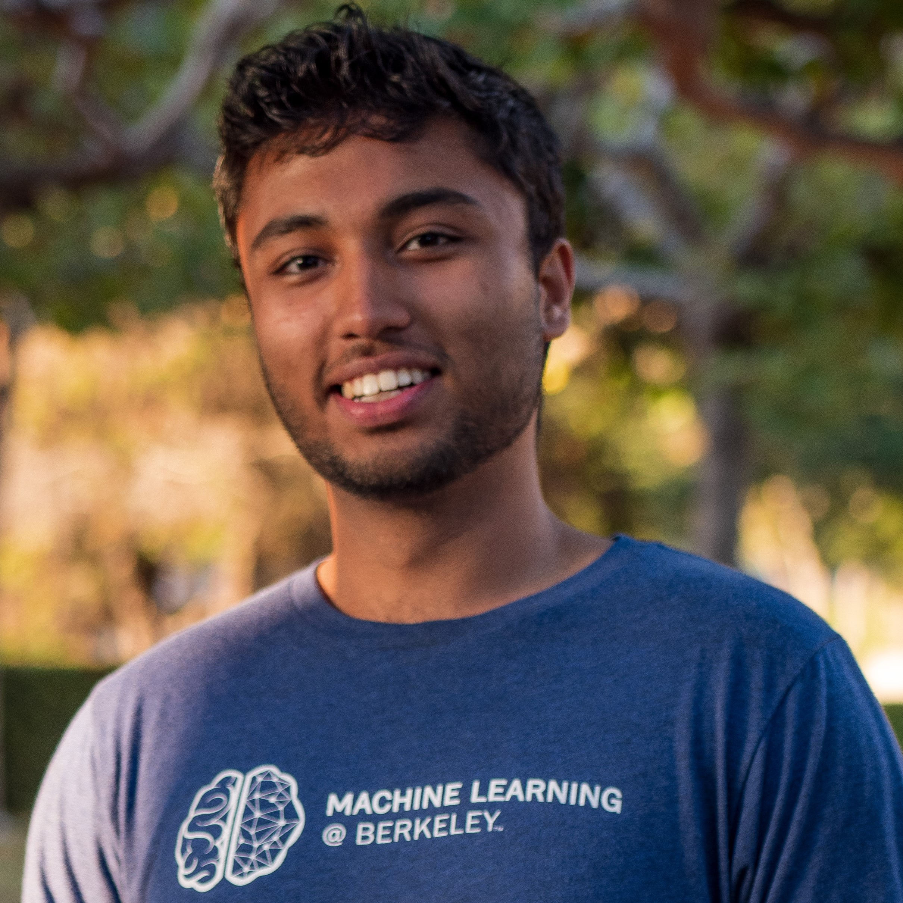
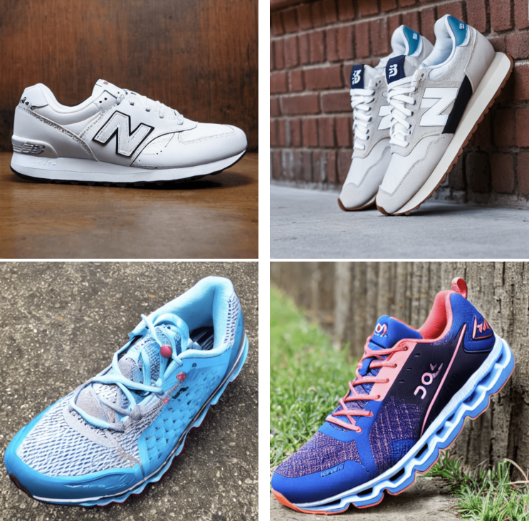
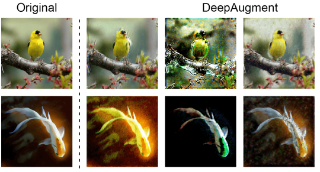

|
Samyak Parajuli
I'm currently a PhD student at UT Austin advised by Amy Zhang. I'm broadly interested in multimodal learning and self-supervised learning within decision-making contexts. My work is supported by the NSF CSGrad4US Fellowship.
Previously, I worked as a research engineer at Perplexity AI, focusing on pretraining, retrieval, and RLHF for LLMs, and at Scale AI, where I specialized in multimodal generative models, semantic search, and interpretability. I recieved a Master's and Bachelor's degree from UC Berkeley, where I researched multi-agent and unsupervised reinforcement learning working with Alexandre Bayen and Sergey Levine.
Email / CV / Scholar / Twitter
|
 |
 |
Let's Go Shopping (LGS)--Web-Scale Image-Text Dataset for Visual Concept Understanding
Yatong Bai,
Utsav Garg*,
Apaar Shanker*,
Haoming Zhang*,
Samyak Parajuli*,
Erhan Bas,
Isidora Filipovic,
Amelia N. Chu,
Eugenia D Fomitcheva,
Elliot Branson,
Aerin Kim,
Somayeh Sojoudi,
Kyunghyun Cho
Arxiv 2023
|
 |
The Many Faces of Robustness: A Critical Analysis of Out-of-Distribution Generalization
Dan Hendrycks,
Steven Basart,
Norman Mu,
Saurav Kadavath,
Frank Wang,
Evan Dorundo,
Rahul Desai,
Tyler Zhu,
Samyak Parajuli,
Mike Guo,
Dawn Song,
Jacob Steinhardt,
Justin Gilmer
ICCV 2021, ICML 2021 Uncertainty and Robustness in Deep Learning Workshop
|
Template adapted from Jon Barron's site.
|